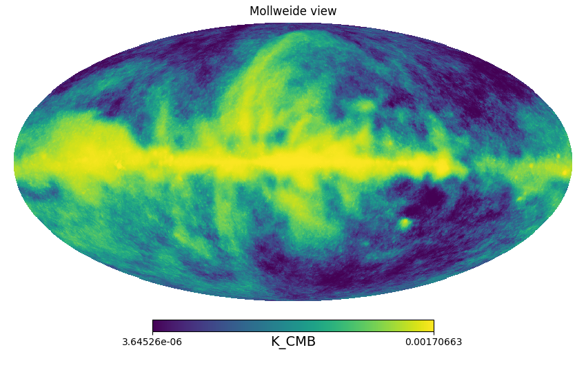
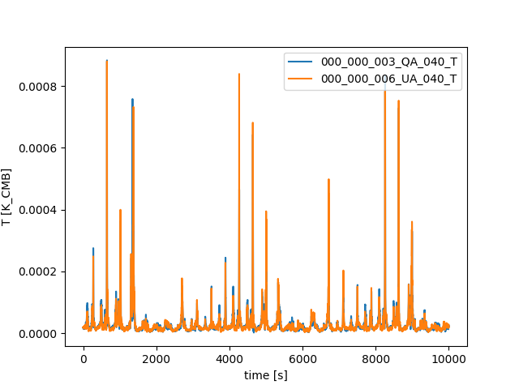
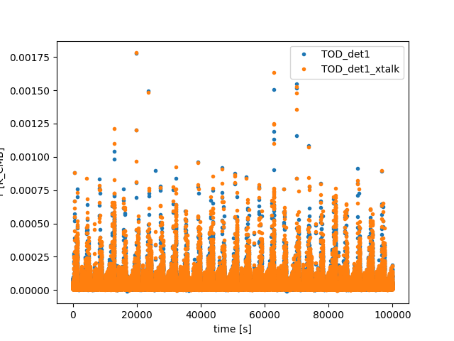
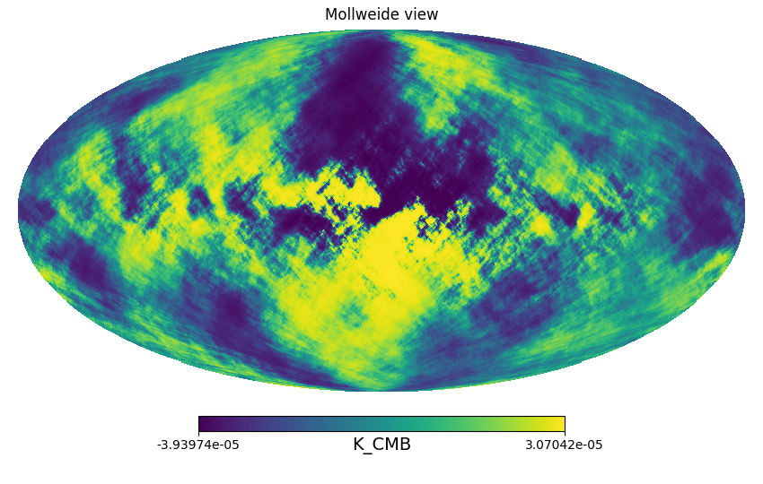
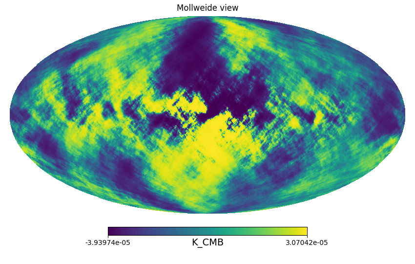
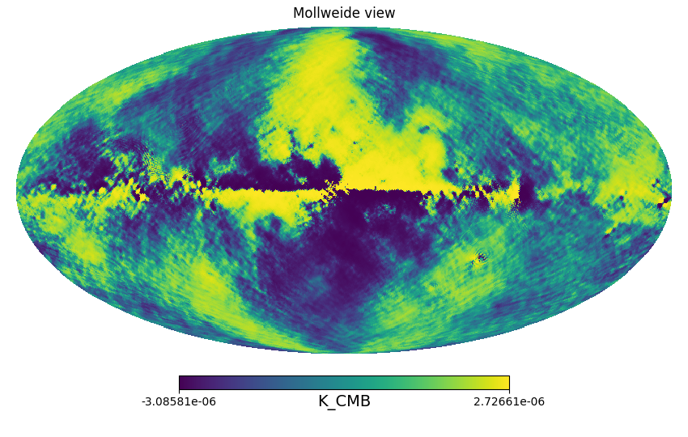
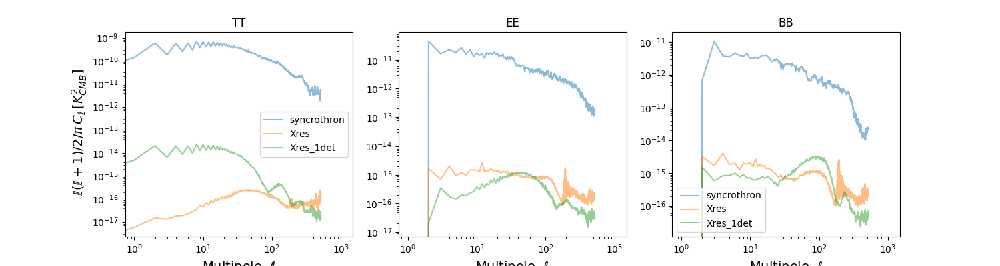

The simulation starts at t0=0 and lasts 31536000 seconds.
The seed used for the random number generator is 12345.
Here is the Crosstalk matrix

Generation of spacecraft quaternions
Quaternions have been created for the simulation:
- One quaternion every 60.0 seconds;
- Memory usage: 16.8 MB
Pointing generation
Pointing information for detectors has been generated.
- Number of MPI processes: 1
- Number of observations: 1
- HWP: No HWP
- Total memory (for θ, φ, ψ): 16.8 MB
Here is the Coverage map for this simulation

Here is the input map in the 40 GHz channel 
Here we can see the Time Ordeed Data (TOD) for two representative frequency channels of the LFT telescope. The peaks correnspond to galactic emission. 
Here we can see the TOD for the simulation, with and without crosstalk 
Residual Crosstalk TOD

Finalluy here we can see the reconstructed maps.

 

Finalluy here we can see the reconstructed maps for the crosstalk residual .


Pointing generation
Pointing information for detectors has been generated.
- Number of MPI processes: 1
- Number of observations: 1
- HWP: No HWP
- Total memory (for θ, φ, ψ): 16.8 MB
Finalluy here we can see the reconstructed maps for the crosstalk residual from the TOD of the first detector only.


Finalluy here we can see the reconstructed maps for the crosstalk residual . 
Instrument model objects
Source code used in the simulation
- Main repository: github.com/litebird/litebird_sim
- Version: 0.13.0, by The LiteBIRD simulation team
- Commit hash: e03a641 (commit comment: Initial commit, by eudigiorgi)
Report written on 2024-11-07 09:57:18